规定初始像素覆盖已通过独立数据验收，完整12步与物理安全未通过。Prescribed initial pixel coverage passes the independent DATA audit; full12-step and physical acceptance remain incomplete. Original1280×720; no edits/crop. Every image below is INITIAL, not micro1/final.
{"seed": 3, "proposal_id": 2737, "global_id": 33457, "family": 1}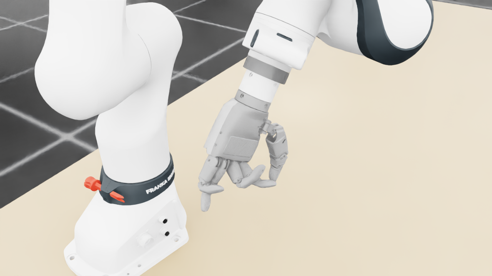
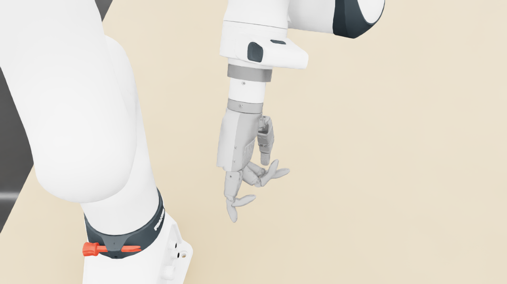
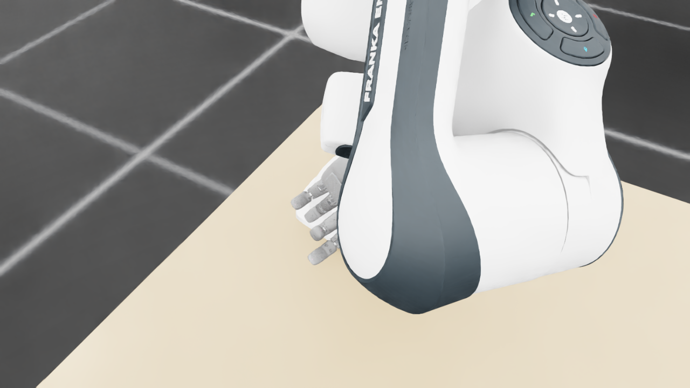
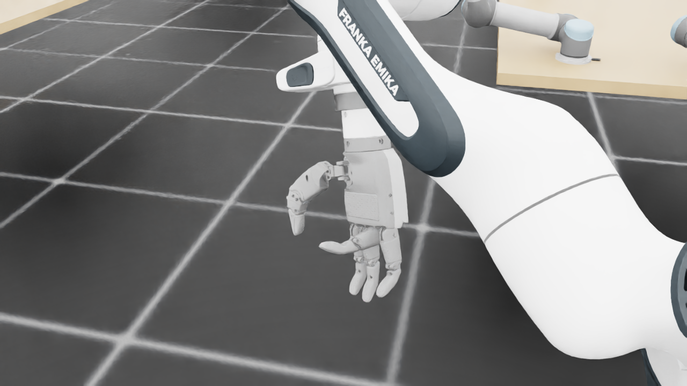
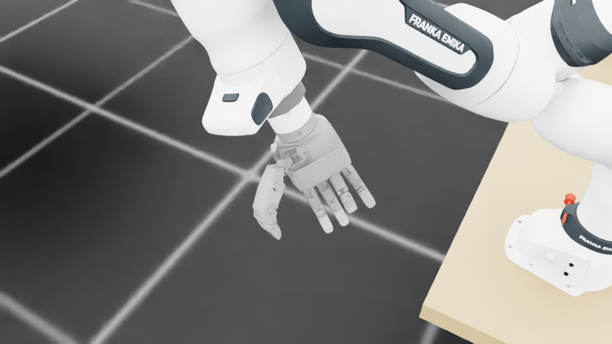
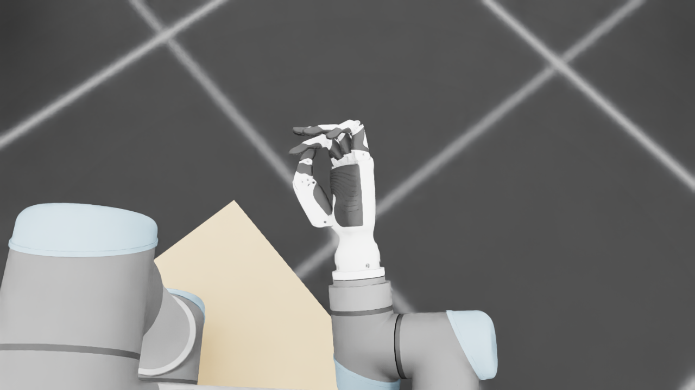
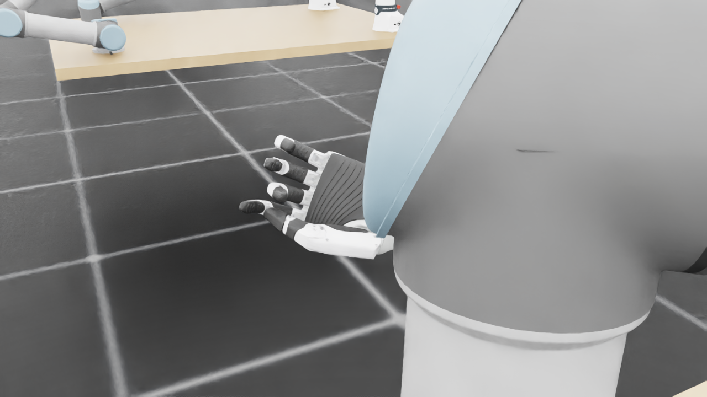
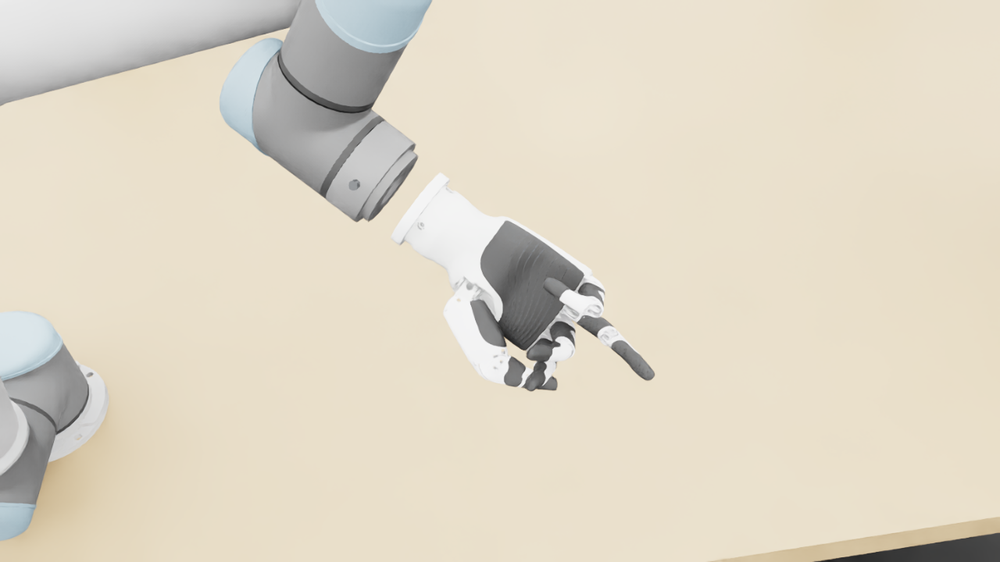
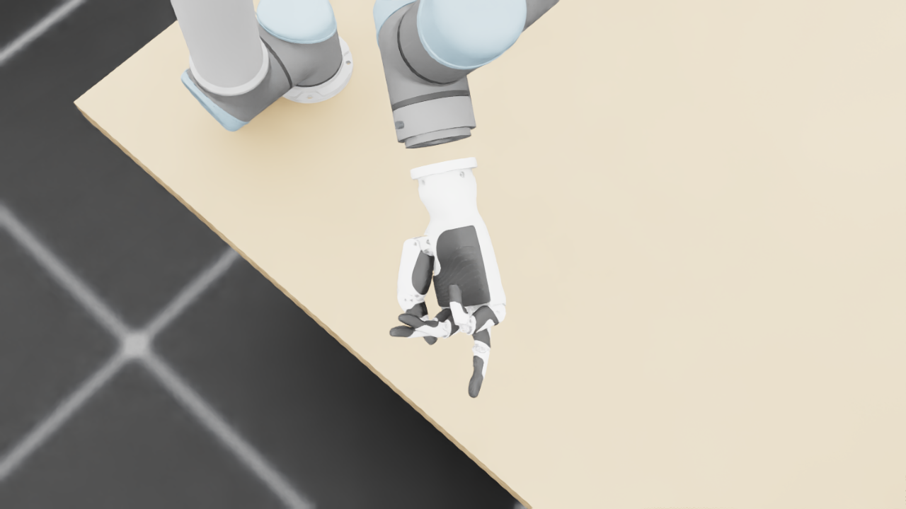
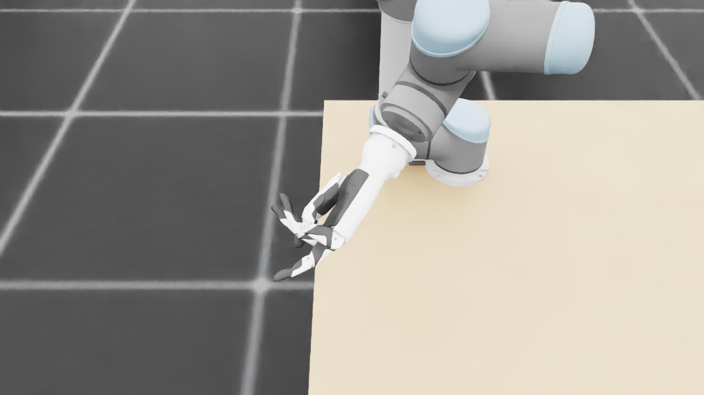
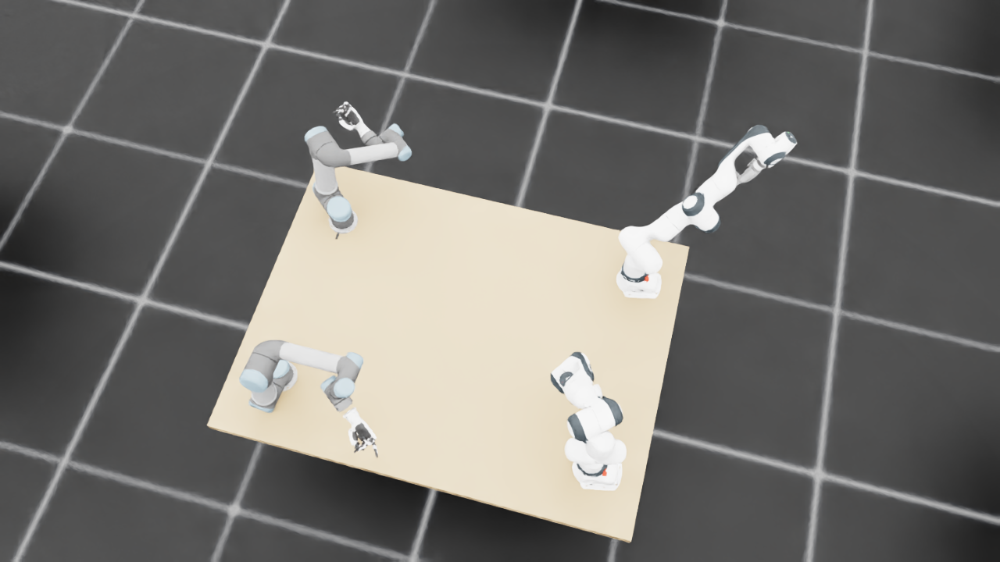
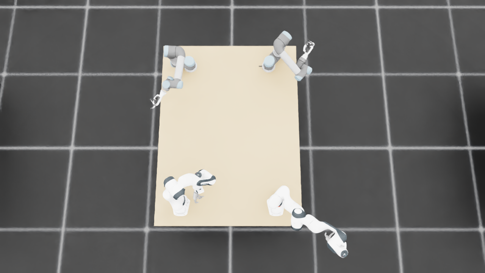
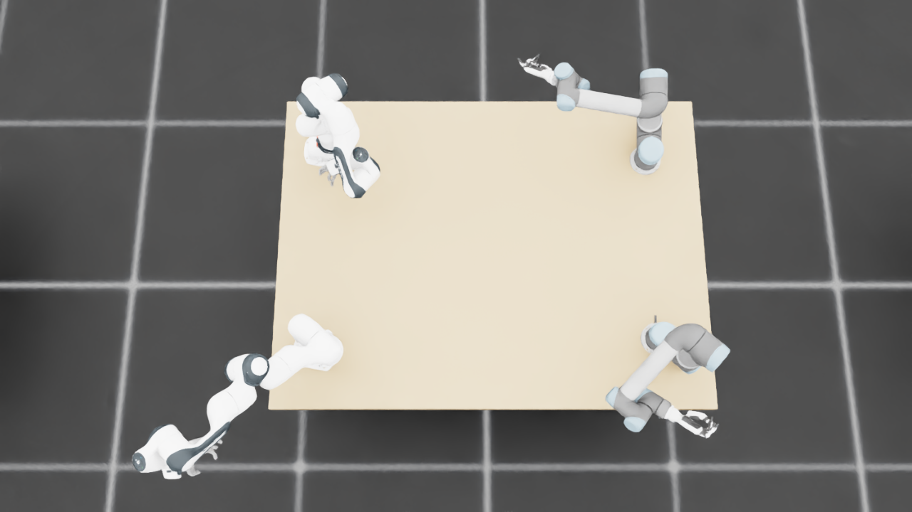
{
"qualified": true,
"arms": {
"F_L": {
"qualified": true,
"palm_visual_peak_pixels": 18070,
"finger_family_peak_pixels": {
"thumb": 6432,
"index": 2036,
"middle": 3782,
"ring": 2488,
"little": 3928
},
"per_native_body_peak_pixels": {
"/World/envs/env_26/F_L/f2_hand/left_hand_base": 27160,
"/World/envs/env_26/F_L/f2_hand/left_index_1": 956,
"/World/envs/env_26/F_L/f2_hand/left_middle_1": 1773,
"/World/envs/env_26/F_L/f2_hand/left_pinky_1": 2546,
"/World/envs/env_26/F_L/f2_hand/left_ring_1": 1332,
"/World/envs/env_26/F_L/f2_hand/left_thumb_1": 725,
"/World/envs/env_26/F_L/f2_hand/left_index_2": 1444,
"/World/envs/env_26/F_L/f2_hand/left_middle_2": 2009,
"/World/envs/env_26/F_L/f2_hand/left_pinky_2": 1415,
"/World/envs/env_26/F_L/f2_hand/left_ring_2": 1156,
"/World/envs/env_26/F_L/f2_hand/left_thumb_2": 3622,
"/World/envs/env_26/F_L/f2_hand/left_thumb_3": 1122,
"/World/envs/env_26/F_L/f2_hand/left_thumb_4": 963
},
"native_body_visibility_gaps": [],
"all_native_hand_bodies_observed": true,
"full_mesh_coverage_certified": false,
"all_recorded_attempt_peak": {
"qualified": false,
"palm_visual_peak_pixels": 26944,
"finger_family_peak_pixels": {
"thumb": 8161,
"index": 2036,
"middle": 3812,
"ring": 4282,
"little": 3928
},
"per_native_body_peak_pixels": {
"/World/envs/env_26/F_L/f2_hand/left_hand_base": 32464,
"/World/envs/env_26/F_L/f2_hand/left_index_1": 1254,
"/World/envs/env_26/F_L/f2_hand/left_middle_1": 1773,
"/World/envs/env_26/F_L/f2_hand/left_pinky_1": 2546,
"/World/envs/env_26/F_L/f2_hand/left_ring_1": 2293,
"/World/envs/env_26/F_L/f2_hand/left_thumb_1": 838,
"/World/envs/env_26/F_L/f2_hand/left_index_2": 1444,
"/World/envs/env_26/F_L/f2_hand/left_middle_2": 2400,
"/World/envs/env_26/F_L/f2_hand/left_pinky_2": 1415,
"/World/envs/env_26/F_L/f2_hand/left_ring_2": 1989,
"/World/envs/env_26/F_L/f2_hand/left_thumb_2": 4509,
"/World/envs/env_26/F_L/f2_hand/left_thumb_3": 1748,
"/World/envs/env_26/F_L/f2_hand/left_thumb_4": 1413
},
"native_body_visibility_gaps": [],
"all_native_hand_bodies_observed": true,
"full_mesh_coverage_certified": false,
"qualification": false
},
"attempts": 8,
"decoded": 8
},
"F_R": {
"qualified": true,
"palm_visual_peak_pixels": 16580,
"finger_family_peak_pixels": {
"thumb": 7591,
"index": 4025,
"middle": 2600,
"ring": 2948,
"little": 3750
},
"per_native_body_peak_pixels": {
"/World/envs/env_26/F_R/f2_hand/right_hand_base": 22008,
"/World/envs/env_26/F_R/f2_hand/right_index_1": 2344,
"/World/envs/env_26/F_R/f2_hand/right_middle_1": 1081,
"/World/envs/env_26/F_R/f2_hand/right_pinky_1": 2321,
"/World/envs/env_26/F_R/f2_hand/right_ring_1": 1492,
"/World/envs/env_26/F_R/f2_hand/right_thumb_1": 694,
"/World/envs/env_26/F_R/f2_hand/right_index_2": 1681,
"/World/envs/env_26/F_R/f2_hand/right_middle_2": 1640,
"/World/envs/env_26/F_R/f2_hand/right_pinky_2": 1429,
"/World/envs/env_26/F_R/f2_hand/right_ring_2": 1456,
"/World/envs/env_26/F_R/f2_hand/right_thumb_2": 4768,
"/World/envs/env_26/F_R/f2_hand/right_thumb_3": 1803,
"/World/envs/env_26/F_R/f2_hand/right_thumb_4": 1458
},
"native_body_visibility_gaps": [],
"all_native_hand_bodies_observed": true,
"full_mesh_coverage_certified": false,
"all_recorded_attempt_peak": {
"qualified": false,
"palm_visual_peak_pixels": 23310,
"finger_family_peak_pixels": {
"thumb": 7591,
"index": 4025,
"middle": 3520,
"ring": 2948,
"little": 3750
},
"per_native_body_peak_pixels": {
"/World/envs/env_26/F_R/f2_hand/right_hand_base": 28406,
"/World/envs/env_26/F_R/f2_hand/right_index_1": 2344,
"/World/envs/env_26/F_R/f2_hand/right_middle_1": 1846,
"/World/envs/env_26/F_R/f2_hand/right_pinky_1": 2321,
"/World/envs/env_26/F_R/f2_hand/right_ring_1": 1492,
"/World/envs/env_26/F_R/f2_hand/right_thumb_1": 694,
"/World/envs/env_26/F_R/f2_hand/right_index_2": 1727,
"/World/envs/env_26/F_R/f2_hand/right_middle_2": 1926,
"/World/envs/env_26/F_R/f2_hand/right_pinky_2": 1429,
"/World/envs/env_26/F_R/f2_hand/right_ring_2": 1456,
"/World/envs/env_26/F_R/f2_hand/right_thumb_2": 5374,
"/World/envs/env_26/F_R/f2_hand/right_thumb_3": 1818,
"/World/envs/env_26/F_R/f2_hand/right_thumb_4": 1478
},
"native_body_visibility_gaps": [],
"all_native_hand_bodies_observed": true,
"full_mesh_coverage_certified": false,
"qualification": false
},
"attempts": 8,
"decoded": 8
},
"U_L": {
"qualified": true,
"palm_visual_peak_pixels": 10369,
"finger_family_peak_pixels": {
"thumb": 9686,
"index": 2998,
"middle": 2200,
"ring": 2444,
"little": 2836
},
"per_native_body_peak_pixels": {
"/World/envs/env_26/U_L/wrist_3_link": 41464,
"/World/envs/env_26/U_L/left_index_1": 2147,
"/World/envs/env_26/U_L/left_little_1": 1829,
"/World/envs/env_26/U_L/left_middle_1": 1248,
"/World/envs/env_26/U_L/left_ring_1": 1745,
"/World/envs/env_26/U_L/left_thumb_1": 144,
"/World/envs/env_26/U_L/left_index_2": 1062,
"/World/envs/env_26/U_L/left_little_2": 1072,
"/World/envs/env_26/U_L/left_middle_2": 1266,
"/World/envs/env_26/U_L/left_ring_2": 897,
"/World/envs/env_26/U_L/left_thumb_2": 5929,
"/World/envs/env_26/U_L/left_thumb_3": 2556,
"/World/envs/env_26/U_L/left_thumb_4": 1195
},
"native_body_visibility_gaps": [],
"all_native_hand_bodies_observed": true,
"full_mesh_coverage_certified": false,
"all_recorded_attempt_peak": {
"qualified": true,
"palm_visual_peak_pixels": 12706,
"finger_family_peak_pixels": {
"thumb": 9686,
"index": 2998,
"middle": 2953,
"ring": 2725,
"little": 2946
},
"per_native_body_peak_pixels": {
"/World/envs/env_26/U_L/wrist_3_link": 41464,
"/World/envs/env_26/U_L/left_index_1": 2147,
"/World/envs/env_26/U_L/left_little_1": 1831,
"/World/envs/env_26/U_L/left_middle_1": 1544,
"/World/envs/env_26/U_L/left_ring_1": 1745,
"/World/envs/env_26/U_L/left_thumb_1": 179,
"/World/envs/env_26/U_L/left_index_2": 1204,
"/World/envs/env_26/U_L/left_little_2": 1115,
"/World/envs/env_26/U_L/left_middle_2": 1409,
"/World/envs/env_26/U_L/left_ring_2": 1261,
"/World/envs/env_26/U_L/left_thumb_2": 5929,
"/World/envs/env_26/U_L/left_thumb_3": 2556,
"/World/envs/env_26/U_L/left_thumb_4": 1195
},
"native_body_visibility_gaps": [],
"all_native_hand_bodies_observed": true,
"full_mesh_coverage_certified": false,
"qualification": false
},
"attempts": 4,
"decoded": 4
},
"U_R": {
"qualified": true,
"palm_visual_peak_pixels": 11897,
"finger_family_peak_pixels": {
"thumb": 7354,
"index": 1214,
"middle": 2256,
"ring": 2625,
"little": 3212
},
"per_native_body_peak_pixels": {
"/World/envs/env_26/U_R/wrist_3_link": 33772,
"/World/envs/env_26/U_R/right_index_1": 337,
"/World/envs/env_26/U_R/right_little_1": 2081,
"/World/envs/env_26/U_R/right_middle_1": 1049,
"/World/envs/env_26/U_R/right_ring_1": 1148,
"/World/envs/env_26/U_R/right_thumb_1": 386,
"/World/envs/env_26/U_R/right_index_2": 921,
"/World/envs/env_26/U_R/right_little_2": 1514,
"/World/envs/env_26/U_R/right_middle_2": 1360,
"/World/envs/env_26/U_R/right_ring_2": 1541,
"/World/envs/env_26/U_R/right_thumb_2": 4708,
"/World/envs/env_26/U_R/right_thumb_3": 1926,
"/World/envs/env_26/U_R/right_thumb_4": 341
},
"native_body_visibility_gaps": [],
"all_native_hand_bodies_observed": true,
"full_mesh_coverage_certified": false,
"all_recorded_attempt_peak": {
"qualified": false,
"palm_visual_peak_pixels": 11897,
"finger_family_peak_pixels": {
"thumb": 9086,
"index": 1316,
"middle": 2256,
"ring": 2864,
"little": 3212
},
"per_native_body_peak_pixels": {
"/World/envs/env_26/U_R/wrist_3_link": 44886,
"/World/envs/env_26/U_R/right_index_1": 638,
"/World/envs/env_26/U_R/right_little_1": 2081,
"/World/envs/env_26/U_R/right_middle_1": 1049,
"/World/envs/env_26/U_R/right_ring_1": 1674,
"/World/envs/env_26/U_R/right_thumb_1": 386,
"/World/envs/env_26/U_R/right_index_2": 921,
"/World/envs/env_26/U_R/right_little_2": 1514,
"/World/envs/env_26/U_R/right_middle_2": 1360,
"/World/envs/env_26/U_R/right_ring_2": 1547,
"/World/envs/env_26/U_R/right_thumb_2": 5551,
"/World/envs/env_26/U_R/right_thumb_3": 2321,
"/World/envs/env_26/U_R/right_thumb_4": 963
},
"native_body_visibility_gaps": [],
"all_native_hand_bodies_observed": true,
"full_mesh_coverage_certified": false,
"qualification": false
},
"attempts": 7,
"decoded": 7
}
},
"wide": {
"qualified": true,
"per_native_object_peak_pixels": {
"/World/envs/env_26/F_L/fr3_link0": 1586,
"/World/envs/env_26/F_L/fr3_link1": 1129,
"/World/envs/env_26/F_L/fr3_link2": 1080,
"/World/envs/env_26/F_L/fr3_link3": 2298,
"/World/envs/env_26/F_L/fr3_link4": 3062,
"/World/envs/env_26/F_L/fr3_link5": 3014,
"/World/envs/env_26/F_L/fr3_link6": 1149,
"/World/envs/env_26/F_L/fr3_link7": 414,
"/World/envs/env_26/F_L/fr3_link8": 4,
"/World/envs/env_26/F_L/f2_hand/left_hand_base": 249,
"/World/envs/env_26/F_L/f2_hand/left_index_1": 30,
"/World/envs/env_26/F_L/f2_hand/left_middle_1": 31,
"/World/envs/env_26/F_L/f2_hand/left_pinky_1": 32,
"/World/envs/env_26/F_L/f2_hand/left_ring_1": 12,
"/World/envs/env_26/F_L/f2_hand/left_thumb_1": 0,
"/World/envs/env_26/F_L/f2_hand/left_index_2": 45,
"/World/envs/env_26/F_L/f2_hand/left_middle_2": 30,
"/World/envs/env_26/F_L/f2_hand/left_pinky_2": 39,
"/World/envs/env_26/F_L/f2_hand/left_ring_2": 15,
"/World/envs/env_26/F_L/f2_hand/left_thumb_2": 0,
"/World/envs/env_26/F_L/f2_hand/left_thumb_3": 0,
"/World/envs/env_26/F_L/f2_hand/left_thumb_4": 0,
"/World/envs/env_26/F_R/fr3_link0": 1566,
"/World/envs/env_26/F_R/fr3_link1": 1561,
"/World/envs/env_26/F_R/fr3_link2": 3034,
"/World/envs/env_26/F_R/fr3_link3": 1645,
"/World/envs/env_26/F_R/fr3_link4": 3046,
"/World/envs/env_26/F_R/fr3_link5": 4723,
"/World/envs/env_26/F_R/fr3_link6": 2234,
"/World/envs/env_26/F_R/fr3_link7": 304,
"/World/envs/env_26/F_R/fr3_link8": 65,
"/World/envs/env_26/F_R/f2_hand/right_hand_base": 427,
"/World/envs/env_26/F_R/f2_hand/right_index_1": 4,
"/World/envs/env_26/F_R/f2_hand/right_middle_1": 5,
"/World/envs/env_26/F_R/f2_hand/right_pinky_1": 32,
"/World/envs/env_26/F_R/f2_hand/right_ring_1": 28,
"/World/envs/env_26/F_R/f2_hand/right_thumb_1": 0,
"/World/envs/env_26/F_R/f2_hand/right_index_2": 12,
"/World/envs/env_26/F_R/f2_hand/right_middle_2": 38,
"/World/envs/env_26/F_R/f2_hand/right_pinky_2": 32,
"/World/envs/env_26/F_R/f2_hand/right_ring_2": 74,
"/World/envs/env_26/F_R/f2_hand/right_thumb_2": 106,
"/World/envs/env_26/F_R/f2_hand/right_thumb_3": 38,
"/World/envs/env_26/F_R/f2_hand/right_thumb_4": 26,
"/World/envs/env_26/U_L/base_link": 349,
"/World/envs/env_26/U_L/shoulder_link": 1193,
"/World/envs/env_26/U_L/upper_arm_link": 2751,
"/World/envs/env_26/U_L/forearm_link": 5057,
"/World/envs/env_26/U_L/wrist_1_link": 1127,
"/World/envs/env_26/U_L/wrist_2_link": 720,
"/World/envs/env_26/U_L/wrist_3_link": 1164,
"/World/envs/env_26/U_L/left_index_1": 17,
"/World/envs/env_26/U_L/left_little_1": 100,
"/World/envs/env_26/U_L/left_middle_1": 34,
"/World/envs/env_26/U_L/left_ring_1": 32,
"/World/envs/env_26/U_L/left_thumb_1": 9,
"/World/envs/env_26/U_L/left_index_2": 49,
"/World/envs/env_26/U_L/left_little_2": 62,
"/World/envs/env_26/U_L/left_middle_2": 60,
"/World/envs/env_26/U_L/left_ring_2": 54,
"/World/envs/env_26/U_L/left_thumb_2": 211,
"/World/envs/env_26/U_L/left_thumb_3": 89,
"/World/envs/env_26/U_L/left_thumb_4": 22,
"/World/envs/env_26/U_R/base_link": 421,
"/World/envs/env_26/U_R/shoulder_link": 1651,
"/World/envs/env_26/U_R/upper_arm_link": 2761,
"/World/envs/env_26/U_R/forearm_link": 4613,
"/World/envs/env_26/U_R/wrist_1_link": 782,
"/World/envs/env_26/U_R/wrist_2_link": 408,
"/World/envs/env_26/U_R/wrist_3_link": 1012,
"/World/envs/env_26/U_R/right_index_1": 20,
"/World/envs/env_26/U_R/right_little_1": 67,
"/World/envs/env_26/U_R/right_middle_1": 33,
"/World/envs/env_26/U_R/right_ring_1": 30,
"/World/envs/env_26/U_R/right_thumb_1": 14,
"/World/envs/env_26/U_R/right_index_2": 28,
"/World/envs/env_26/U_R/right_little_2": 47,
"/World/envs/env_26/U_R/right_middle_2": 48,
"/World/envs/env_26/U_R/right_ring_2": 54,
"/World/envs/env_26/U_R/right_thumb_2": 154,
"/World/envs/env_26/U_R/right_thumb_3": 50,
"/World/envs/env_26/U_R/right_thumb_4": 11,
"/World/envs/env_26/TableF": 114445,
"/World/envs/env_26/TableU": 115116
},
"arm_peak_pixels": {
"F_L": 11965,
"F_R": 17293,
"U_L": 12836,
"U_R": 10971
},
"table_peak_pixels": {
"TableF": 114445,
"TableU": 115116
},
"critical_body_peak_pixels": {
"/World/envs/env_26/U_L/forearm_link": 5057,
"/World/envs/env_26/U_L/wrist_2_link": 720,
"/World/envs/env_26/U_R/forearm_link": 4613,
"/World/envs/env_26/U_R/wrist_2_link": 408
}
},
"raw_attempt_count": 38,
"PNG_count": 38,
"angle_records": 38,
"max_actual_angle_identity_error_deg": 0.0,
"held_snapshot_checks": 838,
"universal_visibility_impossible": false,
"full_mesh_coverage_certified": false
}